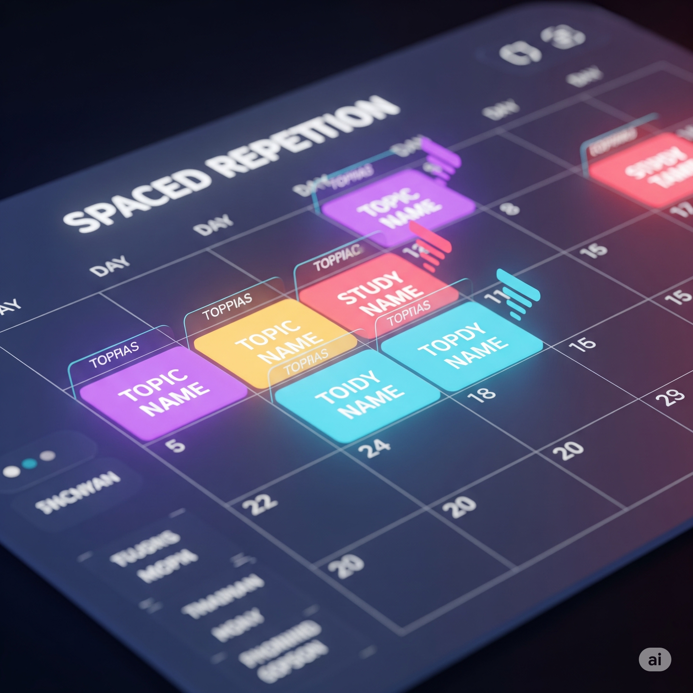

Rewire Your Brain: The Ultimate Guide to Effortless Learning & Perfect Recall
Unlock your brain's true potential with these neuroscience-backed strategies for superior learning and memory.

Ever wonder how some people just get it? They effortlessly soak up new information, remember details with remarkable ease, and seem to have a superpower for learning. Guess what? It's not magic. Your brain is naturally wired for learning, and you absolutely have the power to supercharge your memory and learning abilities! The secret lies in understanding how your incredible brain works, then using strategies that play right into its natural rhythm.
This isn't just theory; it's deeply rooted in cutting-edge neuroscience. As someone constantly fascinated by the intricacies of how we learn, I embarked on a personal quest to master new skills and retain knowledge more effectively. This journey led me through countless hours of research, diving into academic papers and the latest findings in brain science. What started as a personal deep dive into optimizing my own brain eventually evolved into a comprehensive system of highly effective, evidence-based strategies. When I saw the profound impact these principles had on my own learning, memory, and overall cognitive abilities, I knew I couldn't keep it to myself. This post is the culmination of that intense exploration, offering you the very same neuroscience-backed approaches I discovered and refined.
The Science of Change: Understanding Neuroplasticity

At the heart of learning lies neuroplasticity. This term refers to the brain's remarkable capacity to physically reorganize itself in response to new experiences. Each time you learn a fact or skill, connections between brain cells (neurons), known as synapses, are formed. The more you engage with that information, the stronger these connections become, facilitating easier recall in the future. In essence, your brain rewires itself with every act of learning.
The Three Stages of Memory Formation

Our memory system operates through three distinct stages:
- Sensory Memory: This is a brief, transient stage that holds incoming sensory information (sights, sounds, smells) for only a few seconds.
- Short-Term (Working) Memory: This is your brain's temporary workspace. It holds a limited amount of information for a short duration while you actively process and use it.
- Long-Term Memory: This is the big vault for information stored for extended periods, from days to a lifetime. The primary goal of effective learning is to efficiently transfer information from short-term to long-term memory.
Key Brain Structures in Learning

Several brain structures are pivotal in this process. The hippocampus acts as a gatekeeper for new memories, playing a crucial role in consolidating information from short-term to long-term storage. The neocortex is where structured, long-term knowledge is gradually built, often through a hand-off from the hippocampus during sleep. Finally, the amygdala governs emotional memories, which is why emotionally significant events are often remembered so vividly.
By understanding these mechanisms, we can adopt strategies to enhance our learning effectiveness. Let's explore these powerful techniques.
Actionable Strategies to Supercharge Your Brain
1. Master Your Focus and Alertness

To learn effectively, you must be focused and alert. When you are truly focused, your brain releases a neurotransmitter called acetylcholine, which acts like a spotlight, highlighting the specific neurons involved in the task at hand. This makes them more plastic and ready to change. Research consistently demonstrates that this state of undivided attention is critical for long-term retention. Eliminating distractions, especially digital ones, is the first and most crucial step to allow acetylcholine to do its work.
Real-world Scenario: Imagine trying to read a complex technical document while your phone buzzes with notifications. Your attention is split, acetylcholine is not effectively deployed, and the information feels like it's going in one ear and out the other. Now, picture reading the same document in a quiet room, phone out of sight, for a dedicated 25-minute block. Your focus is singular, the concepts begin to connect, and you retain far more information.
2. Implement Spaced Repetition
Repetition is fundamental, but its timing is everything. Spaced repetition leverages the "forgetting curve" the natural decay of memory over time. By reviewing information right as you're about to forget it, you send a powerful signal to your brain that this information is important. Each spaced review flattens the forgetting curve, meaning you can wait longer before the next review, until the information is firmly lodged in long-term memory. This is profoundly more effective than "cramming," which only loads up your short-term memory.
Real-world Scenario: If you want to learn 30 new programming functions, don't drill them all for hours on a Monday. Instead, study them for 30 minutes on Monday. On Tuesday, quickly review them. On Thursday, review them again. Then review them the following Monday. Each session will feel easier, and the knowledge will become a permanent part of your toolkit, rather than a temporary resident.
3. Practice Active Recall (The Testing Effect)

Actively retrieving information from memory is a form of mental exercise that is significantly more effective than passive review (like re-reading or highlighting). Every time you struggle and successfully pull a memory from your brain, you strengthen its neural pathway, making it easier and faster to access next time. This concept is known as "desirable difficulty." The effort itself is what builds the memory. Simply looking at the answer gives you a false sense of fluency without the underlying neural structure.
Real-world Scenario: After watching a documentary on ancient Rome, close your laptop and try to explain the timeline of the Roman Republic to an imaginary friend. Notice where you get stuck. These are the weak points in your memory. Look them up, then try explaining it again. This act of forced retrieval and self-correction is exponentially more powerful than just re-watching the documentary.
4. Embrace Mistakes as Learning Opportunities

Mistakes trigger a unique neurological response. When you realize you've made an error, your brain releases neuromodulators like epinephrine (adrenaline) and acetylcholine, creating a brief state of heightened alertness and focus. This signals that something needs to change, opening a "window for neuroplasticity." By testing yourself and making "small errors," you are actively stimulating this learning cycle. When you finally get it right, the release of dopamine provides a rewarding feeling that reinforces the correct pathway.
Real-world Scenario: You're giving a presentation, and you stumble over a complex slide, or a key point doesn't land well with your audience. That moment of awkwardness or confusion is a powerful signal. Afterwards, you reflect on why it happened maybe the slide was too cluttered, or your explanation was unclear. This critical reflection on a less-than-perfect moment drives you to refine your content and delivery, making your next presentation much smoother and more impactful.
5. Prioritize Rest and Sleep

Strategic Breaks (like a 10-20 minute walk or simply staring out a window) allow the brain to subconsciously replay and consolidate new information in a compressed format. However, quality sleep is the ultimate memory tool. During deep, non-REM sleep, the brain strengthens important neural connections, effectively transferring memories from the temporary storage of the hippocampus to the permanent vault of the cortex. During REM sleep, it connects these new memories to existing networks of information. Without sufficient sleep, this process is severely impaired.
Real-world Scenario: You've just spent two hours trying to understand a complicated chapter on quantum physics. You decide to take a 20-minute walk outside, leaving your notes behind. When you return, the concepts seem a little clearer. Then, after a full night's sleep, those dense theories you struggled with the day before actually make sense! The walk helped prevent immediate overload, and the sleep actively cemented those new, complex ideas into your long-term memory.
6. Engage in Elaborative Encoding

Go beyond passive reading. To truly learn, you must actively connect new information to your existing knowledge base through a process called elaborative encoding. This creates a rich, interconnected web of information. The more connections a memory has to other memories, the more "retrieval cues" you have to find it later. Ask "why" and "how" questions, create analogies, or explain the material in your own simple terms. The more meaningfully you engage, the more robust the memory.
Real-world Scenario: Meeting someone new with a unique name, like "Seraphina"? Instead of just hearing it, immediately try to connect it to something you already know. Maybe she has a "seraphic" smile, or you think of "seraphim" (angels). You could also link her name to something about her appearance or personality, creating a mental tag. The more unusual the connection, the more likely the name will stick.
7. Embrace Multisensory Learning

The brain loves variety. Engaging multiple senses visual, auditory, tactile, and kinesthetic (movement) builds redundant neural pathways to the same piece of information. This creates a richer, more resilient memory trace. If one pathway is weak or you can't access a visual cue, your brain can still retrieve the information through an auditory or tactile link. It's like having multiple roads leading to the same destination.
Real-world Scenario: To learn about the Amazon rainforest, you could: (1) Read a chapter about it (visual). (2) Watch a documentary with the sounds of the jungle (visual/auditory). (3) Listen to a podcast with an ecologist (auditory). (4) Draw a mind map of the ecosystem (visual/kinesthetic). Each activity strengthens your overall understanding in a different way, creating a solid, multi-faceted memory.
8. Practice Interleaving

Instead of studying a single subject in a long, continuous block ("blocked practice"), practice interleaving by switching between different (but related) topics. This feels harder initially because your brain can't get into a comfortable groove. However, this struggle is precisely why it works. It forces your brain to constantly load and reload different mental models, improving its ability to discriminate between concepts and choose the right strategy for a given problem.
Real-world Scenario: If you're learning geometry, instead of doing 20 problems on calculating the area of a circle, then 20 on a triangle, mix them up. A worksheet with circle, triangle, rectangle, and trapezoid problems all jumbled together forces you to pause before each one, identify the shape, and retrieve the correct formula. This builds a more flexible and practical understanding than simply repeating one procedure.
9. Seek Personalization and Manage Cognitive Load
Learning is not one-size-fits-all. Tailoring experiences to your needs, interests, and optimal pace is crucial for managing cognitive load the total amount of mental effort being used in your working memory. If the load is too high (the material is too complex), you become overwhelmed and can't learn. If it's too low (too easy), you become bored. Finding that "sweet spot" of desirable difficulty by personalizing the topic or method is key.
Real-world Scenario: If you need to learn about the history of artificial intelligence and you love sci-fi movies, personalize your learning. Start by researching the AI concepts in films like 'Blade Runner' or '2001: A Space Odyssey'. Use your interest as a gateway to the more formal, technical history. This leverages your existing passion to make the new information more engaging and manageable.
10. Cultivate a Growth Mindset and Perseverance

Your mindset is paramount. Adopting a growth mindset the belief that your intelligence and abilities can be developed through dedication and hard work is the foundation that makes all other strategies possible. This belief directly fuels neuroplasticity. If you believe you can change your brain, you are more likely to put in the effort that actually changes it. Deep learning involves periods of struggle. Perseverance through these challenges is what builds mastery and resilience.
Real-world Scenario: Imagine two people learning to code. The one with a fixed mindset hits a bug and thinks, "I'm just not smart enough for this." They give up. The one with a growth mindset hits a bug and thinks, "This is challenging, but it's an opportunity to learn what I don't know." They consult forums, re-read the documentation, and try different approaches until they solve it. Their brain has now physically changed and strengthened from that struggle, while the other's has not.
Key Takeaway: True mastery in learning comes not from innate talent, but from the disciplined application of strategies that work with your brain's natural architecture. Focus intensely, space out your reviews, actively test your recall, learn from your mistakes, and get adequate rest. These are the pillars of efficient learning and perfect recall.
Ready to Transform Your Learning?
Start by implementing just one of these techniques today. Choose your strategy, commit to it for a week, and observe the difference in your ability to learn and recall information. Your brain is ready to be rewired for success.